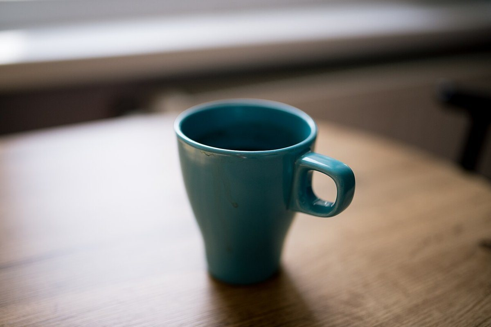
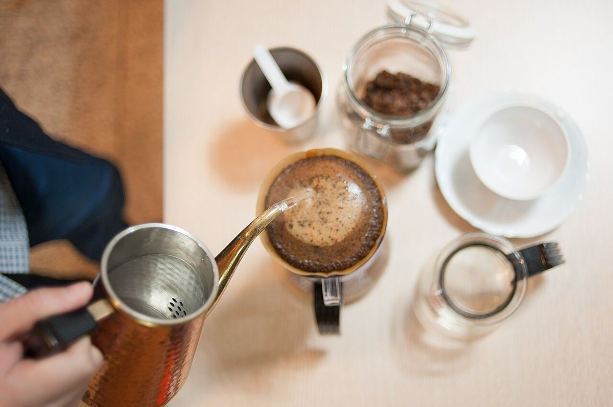
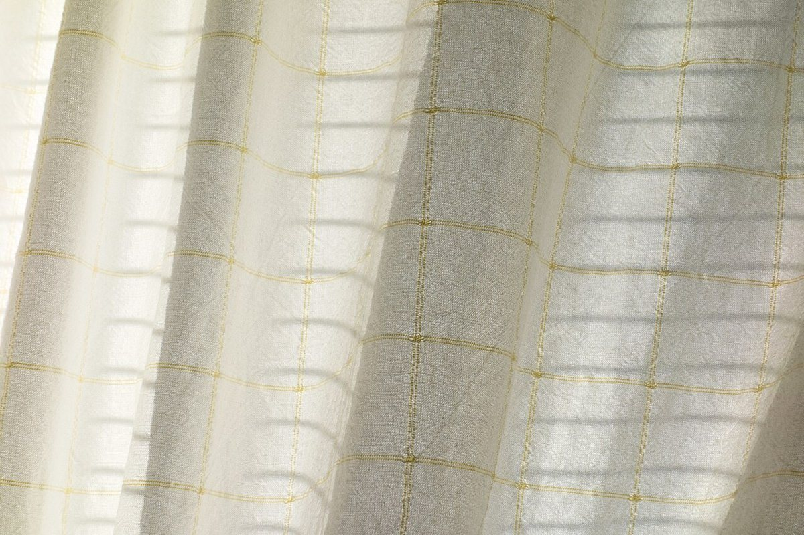
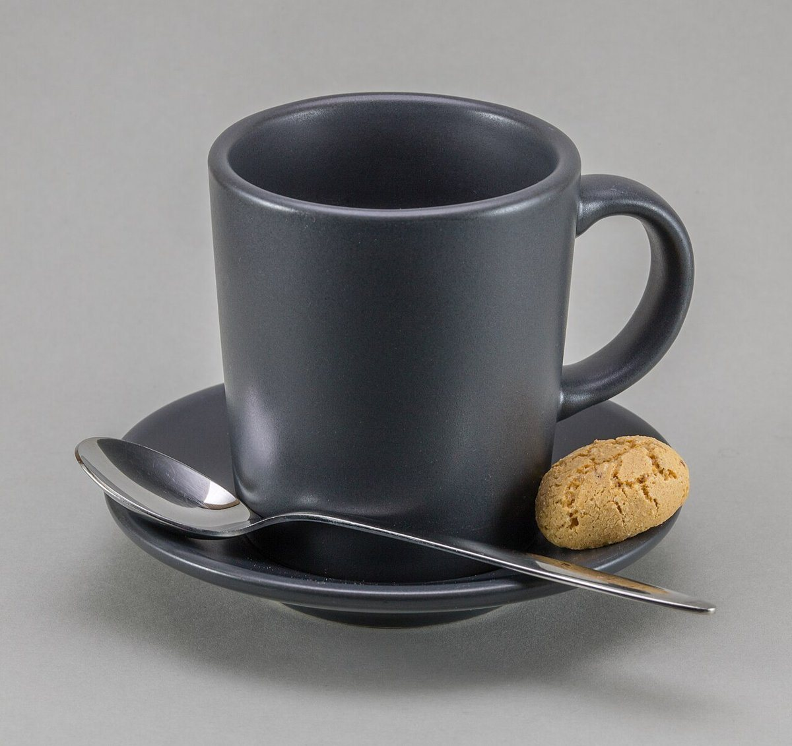

愛媛県西条市 喜多川
sui café
カフェ。いまのところ、このページでお伝えできるのは場所と連絡先まで。くわしい内容は、お店からの情報をお待ちしています。

写真はすべてフリー素材のイメージです



この案について
ここに載せているコンセプトは、制作側の案です。お店の実際の考え方や提供内容を示すものではありません。
案の方向は「ひと息つける時間をていねいに伝える、静かなページ」。窓辺の光、木のテーブル、手に取るカップといった、落ち着いた写真のイメージでまとめました。
メニュー・営業時間・料金などは「準備中」としています。ご確認のうえ、正しい内容に差し替えます。
お店の情報
- 所在地
- 〒793-0042
愛媛県西条市喜多川638-1 - 電話
- 090-7103-3310
- 営業時間・定休日
- 準備中(お問い合わせください)
- @sui.cafe